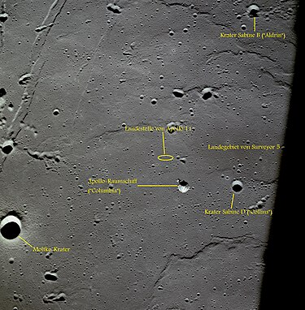
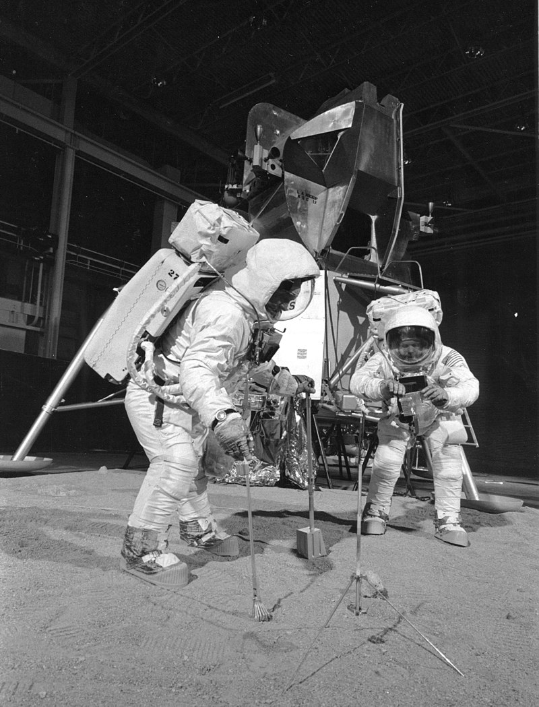

„
Kis lépés egy embernek, de hatalmas ugrás az emberiségnek.”
Az Apollo-program ötödik, űrutazókkal végrehajtott repülése az Apollo–11 volt. Az első kísérlet a holdra szállásra, amely egyben az első sikeres holdra szállás is lett. A holdprogram fő célkitűzése 1969. július 20-án teljesült, amikor Neil Armstrong és Buzz Aldrin sima leszállást teljesítettek a Mare Tranquillitatison (Nyugalom Tengerén), a Hold innenső oldalának egyik lávasíkságán. Később 2 óra 31 perc 40 másodperces időtartamú holdsétát tett a két űrhajós, amelyen 21,55 kg holdkőzet- és holdpormintát gyűjtöttek. Az expedíció harmadik tagja Michael Collins volt, aki Hold körüli pályán keringett a parancsnoki űrhajóval, míg két társa a holdkomppal (LM) leszállt a felszínre.
A sikeres holdra szállás az emberiség legnagyszerűbb tudományos eredményei közé sorolt, máig ható teljesítmény, emellett a hidegháborús katonai szembenállás idején az egész emberiség eggyé válását elősegítő, szimbolikus esemény volt, amely rövid időn belül elvezetett a nagyhatalmak világűrbeli együttműködéséhez és a katonai enyhüléshez.
Az Apollo 11 pontos leszállási helyét a Hold térképek Statio Tranquillitatis „Nyugalom Bázis” önálló néven jelölik. Ilyenformán egyedi módon a Holdon hátrahagyott tárgyak a felszíni képződményekre jellemző megjelölést kaptak. A helyszín közelében fekszik a három űrhajós nevét viselő, nagyobb távcsövekkel látható három kráter is, amelyeket a megszokottól eltérően élő személyekről neveztek el.
Személyzet
| beosztás | űrhajós |
|---|---|
| Parancsnok | Neil Amstrong (2.) űrhajóval |
| Parancsnoki egység pilóta | Michael Collins (2.) űrlepülés |
Holdkomppilóta | Edwin „Buzz” Aldrin (2.) űrlepülés |
Tartalék személyzet
| beosztás | űrhajós |
|---|---|
| Parancsnok | Jim Lovell (1.) űrlepülés |
| Parancsnoki egység pilóta | Bill Anders (1.) űrlepülés |
Holdkomppilóta | Fred Haise (1.) űrlepülés |
Kapcsolattartó személyzet
- Charlie Duke
- Ron Evans
- Owen Kay Garriott
- Don Leslie Lind
- Ken Mattingly
- Bruce McCandless II
- Harrison Schmitt
- Bill Pogue
- Jack Swigert
Előzmények
A leszállóhely kiválasztása
Az ötödik Apollo expedíció volt az első olyan űrutazás, amelyhez leszállóhelyet kellett választani. A landolási pont keresése az ember leszállásának előkészítésére korábban felbocsátott Lunar Orbiter szondák fotói alapján történt.[1] A leszállóhelyet kijelölő bizottság választási kritériumai a következők voltak:[2]
-
Síkság: a leszállóhely a lehető legsimább síkságon terüljön el.
- Ne legyenek kráterek és nagyobb kövek rajta.
- A síkság ne lejtsen 2°-nál jobban.
- Megközelíthetőség: a leszállás útvonalába ne essen nagyobb domb, hegy, szakadék, vagy mélyebb kráter, amely a leszállóradar számára hamis magassági adatokat jelezne.
-
Üzemanyag: a lehető legkevesebb üzemanyag felhasználásával elérhető legyen.
Az Apollo-11 leszállóhelye - Starthalasztás: a földi start késése esetén is elérhető legyen.
- Szabad visszatérés: a szabad visszatérés pályáján közlekedő űrhajó hatósugarába essen.
A legfőbb szempont a biztonság volt, melyet elsősorban a legsimább terület kiválasztása biztosított. A megközelítés és az üzemanyagtakarékosság szempontjai pedig kijelöltek a holdi egyenlítő mentén egy 10° – délre is 5°, északra is 5° – széles sávot, ahová a keresés kiterjedt. Természetesen csak az innenső, állandóan látható oldal jöhetett szóba, szintén biztonsági megfontolások (a rádiókapcsolat egyszerűbb fenntartása) miatt. A keresési terület tovább szűkült, amikor a keleti félgömböt jelölték ki a kutatók, mivel a holdutazók nyugatról keletre kerülték meg az égitestet és a keleti félen több sík mare terület mutatkozott. A 10° széles és 90° hosszú sávot tovább szűkítette az a holt zóna, amelyet a holdkomp befut a Hold mögül előbukkanó űrhajóval való rádiókapcsolat újra felépítéséhez szükséges idő alatt. Ezek alapján a kritériumok alapján összesen öt lehetséges, ezen belül három fő jelöltet választottak ki. Ezen jelöltek újbóli, részletesebb vizsgálata később az Apollo–8 és az Apollo–10 űrhajósainak egyik fő feladata lett. Bormanék repülése után még az „1-es leszállóhely” tűnt befutónak, a Nyugalom Tengere keleti részén – abban a zónában, amely a legkeletibb hely volt, ahol űrhajó egyáltalán leszállhat –, végül az Apollo–10 fotói a „2-es leszállóhelyet” kedvezőbbnek mutatták. A holdgömb közepe táján fekvő „3-as” gyakorlatilag kiesett, a választás a Mare Tranquillitatisra esett, annak is a nyugati oldalán fekvő, a Moltke és a Sabine kráterek között fekvő részére.[3][4]
A legénység kiválasztása
Az Apollo–11 személyzetének kiválasztásakor az alkalmasságon kívül,[5] nem kisebb volt a fő kérdés, hogy ki lesz az első ember, aki a Holdra lép, ki lesz az, aki örökre beírja magát a történelembe. A kiválasztás a NASA személyzeti ügyekért felelős vezetője, Deke Slayton és az Űrhajós Iroda vezetője, Alan Shepard feladata volt. A program kezdetétől fogva létezett egy legénységi rotáció, amelyben először nagy tapasztalatú, veterán űrhajósok repültek. Tartalékként szintén tapasztalt Gemini-legénységek szerepeltek és a rotáció szerint ezek a tartalékok két repülés kihagyása után kerültek repülési státuszba. Így a repülés várományosai az Apollo–8 tartalék személyzetének tagjai voltak. Slayton és Shepard a rotációba való beválogatáskor eleve úgy jelölte ki a legénységeket, hogy amikor az első holdra szállás kísérletei jönnek, akkorra olyan űrhajósok kerüljenek sorra, akik már jártak az űrben. Másrészt volt tapasztalatuk űrrandevú és dokkolás végrehajtásában és esetleg valamilyen nem várt helyzet megoldásában. Jelmondata szerint „mindenkinek képesnek kell lennie mindenféle repülési feladat megoldására”. Ezek alapján az Apollo–7, –8, –9 tartalékai egyaránt teljesen alkalmasak voltak az első holdra zállásra, mi több, ugyanezen repülések fő személyzeteiből is többen szóba jöhettek, igaz rotáción kívül.[6]
Az Apollo–8 tartalék legénysége eredetileg Pete Conrad, Dick Gordon és Alan Bean volt, így ők voltak a „G”-jelű repülés (azaz a holdra szállás első kísérletének) várományosai. Aztán az eredeti Apollo–8 – a „D” repülés, a holdkomp Föld körüli pályán történő berepülése – és az Apollo–9 – az „E” repülés, egy nagy magasságú teszt – helyet cseréltek, hogy az Apollo–8 a szovjeteket megelőzve a Holdhoz repülhessen. Ekkor vált a holdra szállás első számú esélyesévé Neil Armstrong, Buzz Aldrin és Jim Lovell. Aztán Lovell átvette Michael Collins helyét az Apollo–8 parancsnoki modul pilótájának székében, mivel Collinsnak egy kényszerű műtét miatt ki kellett hagynia az első holdrepülést. Betegségéből felgyógyulva ő is csatlakozhatott Armstrong és Aldrin mellé, így alakult ki a végleges hármas
Deke Slayton azonban szívesen felrúgta volna a rotációt, csak hogy a történelmi feladatra egy nagy egyéniséget, a legtapasztaltabb veterán űrhajóst küldhessen fel. Első számú jelöltje a korábban az Apollo–1 tüzében elhunyt Virgil „Gus” Grissom volt, egészen annak haláláig. Ezek az űrhajósok a következők voltak: Wally Schirra (Apollo–7), Frank Borman (Apollo–8), Jim McDivitt (Apollo–9). Aztán ahogy ezek a parancsnokok lerepülték a maguk Apollo küldetését, sorban jelentették be, hogy nem kívánnak több űrrepülést tenni. Így mivel nem maradt „kimagasló” egyéniség, maradt a rotáció, amelyben az Armstrong–Aldrin–Collins hármas állt elöl. Külön jó pontnak számított, hogy Armstrong civil volt, nem katona, ezzel a militarizmus látszatát is távol lehetett tartani a történelmi holdra szállástól. Így kapta meg végül Armstrong a különleges lehetőséget. Slayton 1969. január 6-án közölte Armstronggal, hogy őt jelöli az Apollo–11 parancsnoki beosztására, három nap múlva pedig a NASA hivatalosan is bejelentette a jelölést.
Később az óriási médiafelhajtást kevésbé jól viselő Aldrin megpróbálta átkérni magát egy másik, kevésbé történelmi és kevesebb médiafigyelmet magára vonó, ám tudományos szempontból fontosabb repülésre. Slayton azonban világossá tette számára, ha most nem repül, később sem fog, így Aldrin visszakozott és a kijelölt legénység változatlan maradt.
A start előtt egy héttel Tom Paine, a NASA elnöke példátlan ajánlatot tett Armstrongnak, megígérte, hogy ha valamilyen probléma miatt meg kéne szakítani a küldetést, úgy a következő expedíción is ők repülhetnek. A NASA ezzel a kockázatot szerette volna csökkenteni, mivel a berepülőpilóták az átlagosnál sokkal merészebbek, valamint az Űrhajós Irodához hasonló, katonai alapokon nyugvó szervezetekben sokszor már egészségtelen versenyszellem uralkodik. Paine a kivételes ajánlattal próbálta kissé csökkenteni a parancsnokra nehezedő nyomást, hogy baj esetén könnyebben döntsön az esetleges – a többiek szemében kudarccal egyenértékű – megszakításról és ne vállaljon felesleges rizikót, ami akár tragédiába is torkollhat.
Hívójel- és emblémaválasztás
A rádió hívójelek kiválasztása – amelyek a parancsnoki űrhajó és a holdkomp nevével megegyeznek – hagyományosan a legénység privilégiuma volt. A gyakorlások során az Armstrong-féle csapat a Jégkása és a Szénakazal neveket választotta,[8] ám amikor a hivatalos jelölés megtörtént, lecserélték a kissé komolytalan neveket a történelmi küldetéshez illőkre. Így kapta a parancsnoki űrhajó a Columbia nevet, amelyet elsősorban Jules Verne Utazás a Holdba és Utazás a Hold körül című regényei cselekményével és a Columbiad ágyúval meglevő asszociáció ihletett. De a szónak további jelentései is voltak, mint például a hasonló nevű 18. századi legendás amerikai hajó, amely az északnyugati ismeretlen tengeri területeket kutatta. Magára az Egyesült Államokra is utalhatott a név, hisz Columbia Amerika nőnemű költői neve is egyben a kultúrában. A holdkompot pedig az Eagle névre keresztelték (pontosabban a különválást követően ezen a hívójelen kommunikáltak az utasaival), amely egyértelmű hazafias utalás Amerikára, amelynek a címermadara a fehérfejű rétisas
Szintén az űrhajósok dolga volt legénységi emblémát tervezni. A legénység az egész program legminimalistább logóját tervezte, elhagyva belőle minden sallangot – még a saját nevüket is – hogy egyértelműen szimbolizálják az üzenetet: az Egyesült Államok békével érkezett a Föld lakóinak nevében a Holdra. A szimbólumrendszerben egy fehérfejű rétisas száll le egy kráterszaggatta holdi tájon, karmai között – a béke jeleként – olajágat szorítva, háttérben a Földdel és az Apollo–11 felirattal.
Gyakorlati kiképzések a Földön

Az űrhajósok a holdséta tevékenységeit szimulálják még a Földön
Az űrhajósok a holdséta tevékenységeit szimulálják még a Földön
Az Apollo–11 minden korábbinál bonyolultabb expedíciónak készült, így Armstrongéknak a legkomplexebb tréningprogramon kellett átesniük a normál űrhajós kiképzés mellett. A parancsnok valós kiképzést kapott a holdkomp leszállására az LLTV (Lunar Lander Training Vehicle – Holdi Leszállóegység Gyakorló Eszköz) nevű furcsa szerkezettel. Ez a gép egy függőlegesen beépített sugárhajtóművel és további rakétahajtóművekkel ellátott csővázas repülőeszköz volt, amely a holdkomp függőleges leszállásának szimulációjára szolgált. A függőleges sugárhajtómű szolgált a Föld gravitációjának ellensúlyozására, az 1/6 erősségű holdi gravitáció érzetének megteremtésére, a rakétahajtóművek pedig a holdkomp (LM) épített manőverező fúvókák másai voltak. Ezzel a géppel kellett a leendő holdra szálló űrhajósoknak begyakorolniuk a holdi leszállás legvégső fázisát. A gép sajnos nagyon megbízhatatlannak bizonyult, egy ízben Armstrong kis híján meghalt benne, amikor a hajtómű elromlott, és alig 100 méterről az eszköz lezuhant. Szerencsére az űrhajós a pillanat tört része alatt felismerte a bajt és katapultált.
A repülési műveletek begyakorlására – a korábbi küldetésekhez hasonlóan – széles körben használták a parancsnoki űrhajó- és a holdkomp szimulátorokat. Ezen gyakorlások alatt az út során előforduló tervezett műveleteket (elsősorban a dokkolásokat) lehetett készségszintig begyakorolni, valamint rengeteg vészhelyzeti eljárást próbáltak ki segítségükkel az űrhajósok és az irányítás. Ez utóbbi esetben a szimulátor kezelőszemélyzete az űrhajósok tudtán kívül elrontott valamilyen repülési paramétert – műszerhibát, vagy esetleg rendellenes űrhajó működést szimulálva –, és az űrhajósoknak ezekre a váratlan helyzetekre is helyes megoldást kellett találni. Armstrong és Aldrin – eltérően a korábbi küldetésektől – rengeteg lehetőséget kapott a holdi leszállás gyakorlására a szimulátorban.
A szerteágazó terepgyakorlatok szintén új színfoltot jelentettek a kiképzésben. Ezek egyik fajtája volt a holdműveletek szkafanderben történő gyakorlása, amelynek során egy hatalmas NASA hangárban kialakított, homokkal borított területen kellett a végrehajtandó műveleteket szimulálni az űrhajósoknak egy holdkomp makettel és a felküldendő eszközök egy-egy gyakorló példányával. A másik szimulációs terület a mozgás gyakorlása volt, a Hold gyengébb gravitációs környezetéhez való szoktatás. Ehhez az űrruhás űrhajósokat úgy függesztették fel rugalmas szalagok segítségével, hogy a nehézségi erőt a valóságos gravitáció egyhatodának érezzék. Ezek a gyakorlások többnyire sikertelenek voltak, mert a felfüggesztő szalagok, rugók nagyban korlátozták a mozgást és azt mutatták, hogy a holdfelszíni munka cseppet sem lesz könnyű. A geológiai terepgyakorlatok ettől eltérően egészen más típusú kiképzést jelentettek. Nagyon kevés ilyen gyakorlatra jutott idő a túlfeszített felkészülési tervben, de meg kellett ismertetni az űrhajósokat valós körülmények között az egyes kőzetfajtákkal és előfordulásukkal még idelenn a Földön. Ezért a NASA sivatagi gyakorlatokat szervezett, amelyen Armstrongék is részt vettek.[14][15] Sajnos néhány esetben a sajtó túlzott érdeklődése meghiúsította a gyakorlásokat, mikor tudomást szerezve egy-egy ilyen kitelepülésről, tömegesen jelentek meg a helyszínen. Helikopterrel figyelték a lenti munkát, megakadályozva a nyugodt tanulást, vagy akár az űrhajósok és a tanár egymás közötti kommunikációját.
Luna–15
A Hold eléréséért folyó versenyt a Szovjetunió elvesztette az N1 rakétáinak robbanásai miatt, de utolsó esélyként megpróbálta még csökkenteni a holdra szállás jelentőségét azzal, hogy felküld egy űrszondát, ezzel kérdőjelezve meg az emberek feljuttatásának szükségességét. A Luna–15 küldetése anyagminta visszahozása lett volna a holdfelszínről, mégpedig az elképzelt időrend szerint az Apollo–11 visszatérése előtt. A Szovjetunió, amikor látta a holdverseny elvesztését, váltott propagandájában és azt kezdte kihangsúlyozni, hogy az amerikaiak temérdek felesleges pénzt költenek és emberek életét veszélyeztetik a holdra szállással, amikor annak tudományos céljait egyszerűen és olcsón teljesíteni lehet mintavevő holdszondák feljuttatásával is. Az állítás demonstrálására – és az Apollo-program tudományos megkérdőjelezésére – 1969. július 13-án elindították a szondát, amely Armstrongék előtt, 1969. július 17-én állt Hold körüli pályára. Ezután azonban irányítási problémák léptek fel és a leszállás elhúzódott. Mivel a két küldetés időben fedte egymást, a szovjetek kénytelenek voltak átadni a repülési adatokat a NASA-nak, bizonyítván, hogy nincs ütközésveszély a szonda és az űrhajóegységek között. Ez volt az első űrkutatási célú közvetlen adatcsere a szovjet és amerikai fél között. Végül a Luna–15 leszállás helyett 1969. július 21-én egy hiba folytán becsapódott a Holdba valahol a Mare Crisiumon.